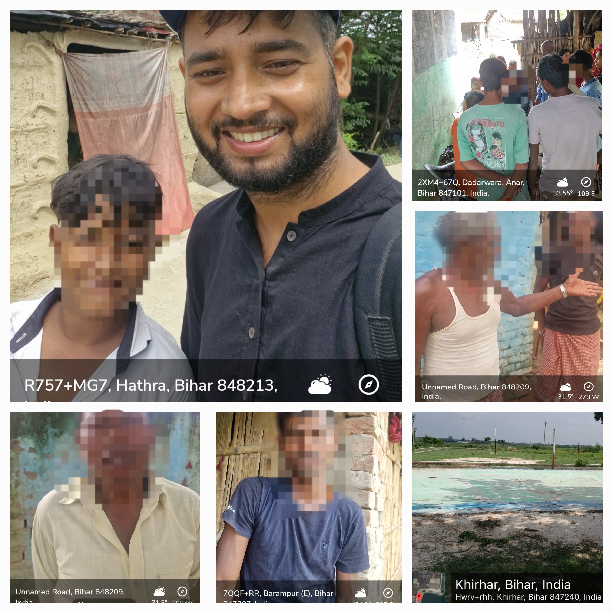

Driving positive change through research and development initiatives

Our organization is undertaking an evaluation project to assess the implementation and impact of the Mahatma Gandhi National Rural Employment Guarantee Act (MGNREGA) at the Panchayat level. The study aims to examine the effectiveness of work execution, fund utilization, and transparency mechanisms in rural employment generation.
By engaging with beneficiaries, local officials, and community stakeholders, the project seeks to identify key challenges and best practices that can inform policy recommendations and strengthen future implementation. This initiative contributes to evidence-based planning and improved accountability within the rural development framework of Bihar.